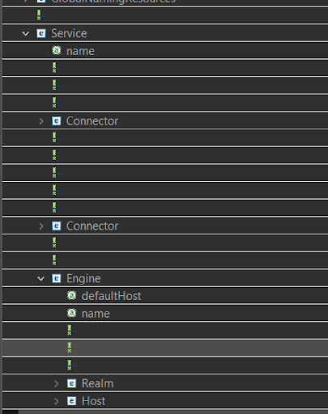
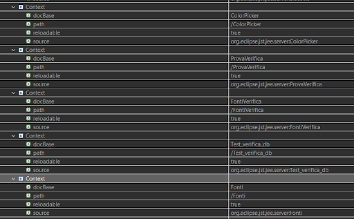
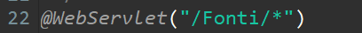
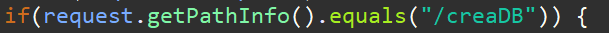

Una volta installato tomcat sull’IDE di Java nella cartella destinata al web server si creeranno automaticamente delle sottocartelle, andiamo ad esaminare server.xml
Dentro server.xml si possono trovare diverse cartelle tra cui “host” dove sono contenute tutte le informazioni riguardanti il percorso delle servlet che abbiamo eseguito utilizzando quel determinato web server.
In corrispondenza ad ogni servlet tomcat crea automaticamente un virtual host name based e di conseguenza anche il relativo percorso. Dentro una servlet è poi possibile creare diversi percorsi ai quali è possibile accedere con il comando path info che confronta l’url e cerca la parte di codice corrispondente
con questo comando all’inizio della servlet autorizziamo il path info a spostarci in diverse cartelle appartenenti al dominio in cui stiamo lavorando:
